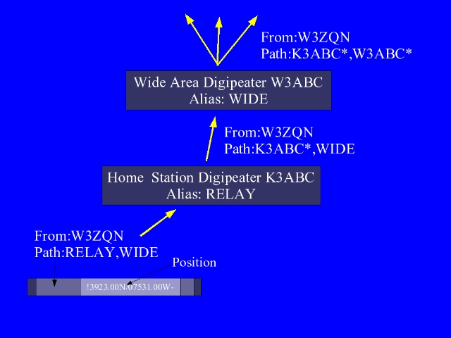

Notes:
This is the old (no longer recommende) Relay,Wide alias path,where mobile and home stations with relay aliases would retransmit packets to wide area digipeaters on high points of the terrain.